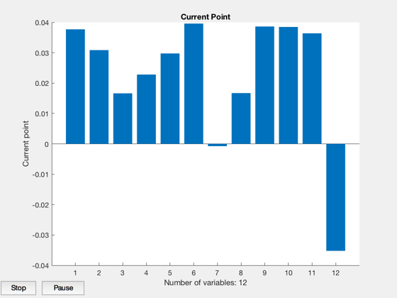
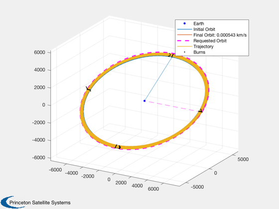
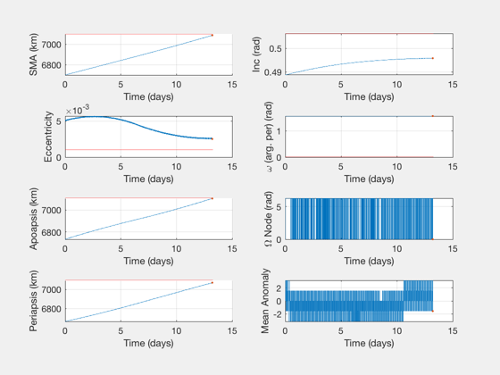
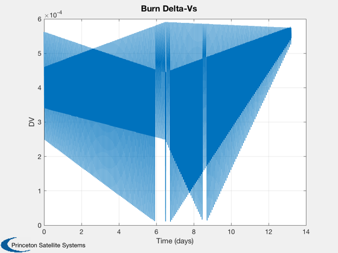
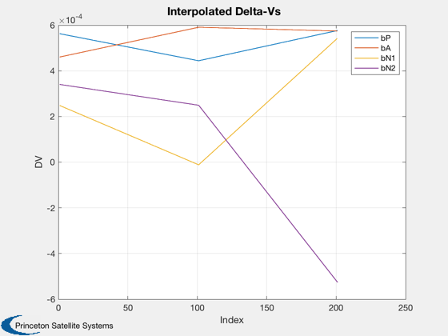
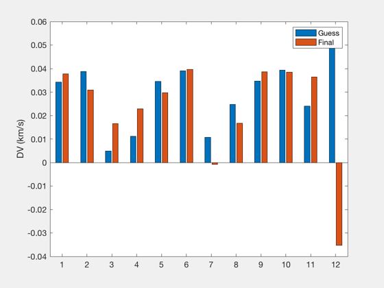

Contents
Impulsive 4X mass optimization, LEO, with interpolated inner laps
Inter-LEO, small plane change, with linear mass function.
See also: OptimizeImpulsive4X, IterativeHohmannInc
%--------------------------------------------------------------------------- % Copyright (c) 2018 Princeton Satellite Systems, Inc. % All rights reserved. %---------------------------------------------------------------------------
Choose key and tween laps. Minimum of 2 key laps for tweens to be inserted.
A tween of "1" is the same as no tweens - only the key laps are used. To retrieve a Hohmann solution, use 1 key and 1 tween. if nKey is changed you must set restart to false and generate a new solution.
nKey = 3; nTween = 100; restart = false; % Initial conditions wArg = pi/2; elInitial = [6700 28*pi/180 0 wArg 0.005 0]; elFinal = [7100 29*pi/180 0 0 0.001 0.1]; % Propulsion parameters m0 = 300; sigma = 100; % Analytical solution - Hohmann dInc = elFinal(2) - elInitial(2); [dVHoh,dv1,dv2,Di1,Di2] = DVHohInc(elInitial(5),elInitial(1),elFinal(5),elFinal(1),dInc); % Low-thrust spiral dVlow = LTPlaneChange( elInitial(1), elFinal(1), dInc ); % Iterative Hohmann burnsI = IterativeHohmannInc( elInitial(1), elFinal(1), dInc, 0.035 ); DispWithTitle([elInitial;elFinal],'Initial and Final Elements:') fprintf('Analytical delta-V is %g km/s. \n',dVHoh); fprintf('Iterative Hohmanns is %g km/s. \n',sum(burnsI(:,1))); fprintf('Low thrust delta-V is %g km/s. \n',dVlow);
Initial and Final Elements:
Columns 1 through 3
6700 0.488692190558412 0
7100 0.506145483078356 0
Columns 4 through 6
1.5707963267949 0.005 0
0 0.001 0.1
Analytical delta-V is 0.259147 km/s.
Iterative Hohmanns is 0.282301 km/s.
Low thrust delta-V is 0.303349 km/s.
Optimize
data = OptimizeImpulsive4X; data.keyLaps = nKey; data.tweenLaps = nTween; % Total laps are (key - 1)*tween + 1 totalLaps = (data.keyLaps-1)*data.tweenLaps + 1; fprintf('Total number of laps: %d\n',totalLaps); %data.elementMask = [1 1 0 0 1 0 0 0]; % sma and ecc data.elementMask = [0 1 0 0 0 0 1 1]; % apses data.ConTol = 1e-5; data.stepTol = 1e-8; data.W = [0.001 3 1 1 2]; % [sma inc raan w ecc] data.doInitial = false; if restart data.doInitial = false; end % linear mass cost function costFun = @MassCostLinearFun; costData = MassCostLinearFun; costData.m0 = m0; costData.sigma = sigma; data.costFun = costFun; data.costData = costData;
Total number of laps: 201
run
if restart data.dvsPrev = out.keydVsF; end % run with zero cost to ensure feasibility [burns, elOutput, out]=OptimizeImpulsive4X(elInitial,elFinal,[],data);
First-order Norm of
Iter F-count f(x) Feasibility optimality step
0 13 1.359676e+01 3.072e-03 3.929e+01
1 36 1.320806e+01 1.497e-06 2.716e+01 5.413e-02
2 52 1.314272e+01 6.613e-03 1.874e+05 1.353e-02
3 70 1.256374e+01 2.071e-02 2.799e+01 1.353e-02
4 85 1.216433e+01 2.875e-02 7.624e+03 1.353e-02
5 103 1.194067e+01 3.249e-02 2.806e+01 1.353e-02
6 119 1.190411e+01 2.869e-02 1.554e+02 6.766e-03
7 137 1.175400e+01 3.150e-02 5.977e+01 6.766e-03
8 153 1.163549e+01 3.389e-02 2.322e+03 1.184e-02
9 171 1.163578e+01 3.101e-02 3.812e+01 8.822e-06
10 186 1.163572e+01 3.101e-02 5.600e+01 5.514e-06
11 204 1.163600e+01 3.101e-02 6.907e+01 5.139e-06
12 219 1.163634e+01 3.100e-02 5.148e+01 8.924e-06
Converged to an infeasible point.
fmincon stopped because the size of the current step is less than
the value of the step size tolerance but constraints are not
satisfied to within the value of the constraint tolerance.
 Report
Call system mass function with output
[sysMass,masses] = MassCostLinearFun(burns,elInitial,data.costData,OTFrame('polar')); fprintf('\nTotal system mass: %.1f kg\n---------------\n',sysMass) fprintf(' Fuel mass: \t%.1f kg\n',masses(1)); fprintf(' Tank mass: \t%.1f kg\n',masses(2)); fprintf(' Propulsion mass:\t%.1f kg\n',masses(3)); OptimizerReport(out) PlotImpulsiveTrajectory(elInitial, burns, elFinal); PlotElementsImpulsive(elInitial, burns, [], elFinal); dVs = reshape(out.tweendVsF,4,[])'; [time,tlabl] = TimeLabl(out.absTimes'); Plot2D(time,out.burns(:,1)',tlabl,'DV','Burn Delta-Vs') Plot2D(1:size(dVs,1),dVs,'Index','DV','Interpolated Delta-Vs') legend('bP','bA','bN1','bN2') NewFig('Initial and Final Key DVs'); bar([out.dVs0;out.keydVsF]') ylabel('DV (km/s)') legend('Guess','Final') %--------------------------------------
Total system mass: 11.6 kg
---------------
Fuel mass: 9.2 kg
Tank mass: 0.7 kg
Propulsion mass: 1.7 kg
Total Delta-V (km/s):
0.303967239669056
Number of burns:
790
Initial elements, target, achieved:
Columns 1 through 3
6700 0.488692190558412 0
7100 0.506145483078356 0
7086.56054021998 0.495809086392946 0
Columns 4 through 6
1.5707963267949 0.005 0
0 0.001 0.1
1.57079895098663 0.0025155353519762 -1.56576768653375
Mission duration:
13.2169 Time (days)
Cost value:
11.636336741858
Iterations:
13
Constraint value:
0.0309995272753247
Elapsed Time:
34.6455 sec
System mass:
11.6363 kg
Masses:
9.15677165153473 0.732541732122779 1.74702335820044
    